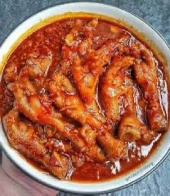

Nutrisi yang Harus Dihindari
Banyak Sekali Makanan yang Harus kamu hindari
-
1. Makanan yang sulit dicerna: Karena dapat menyebabkan obstruksi
- Contoh: jagung, kacang - kacangan, biji - bijian.
-
Makanan/Minuman yang menghasilkan gas: Dapat menyebabkan gembung dan gas berlebihan.
- Contoh: Kubis, Brokoli, dan Minuman berkarbonasi.
-
Makanan yang pedas: Dapat menyebabkan iritasi dan ketidaknyamanan pada kulit.
- Contoh: Cabe, Seblak.

-
Makanan dengan bau yang kuat: Bisa menyebabkan bau tidak sedap pada output stoma.
Kembali ke Dashboard